Apprendre à piloter un vaisseau
Un cours progressif pour piloter les vaisseaux du jeu : ce qui change dans le vide, la lecture de la sphère d'attitude et du HUD, puis une leçon par manœuvre — tenir une attitude, monter et descendre une orbite, circulariser, changer de plan, aller vers la Lune, le rendez-vous et l'amarrage, la rentrée et le plané, l'atterrissage sous moteur, le décollage, l'Endurance et Gargantua, les pannes. Chaque leçon donne les touches, les chiffres, les erreurs, et les mêmes gestes en code pour un LLM.

Le texte de référence, avec chaque source dans le code, est VOL-VAISSEAUX.md : sa partie I est ce cours, sa partie II la référence de la physique, des autopilotes, des systèmes et des limites. Les leçons suivent l'école spatiale du jeu (src/game/spacecourse.ts).
Pour un humain, pour un LLM
Au clavier
Les touches sont des positions physiques (noms QWERTY, AZERTY entre parenthèses) ; la disposition est celle de Kerbal Space Program. Les chiffres 1…0 se lisent par position (la rangée du haut d'un clavier AZERTY, sans Maj). Une manette ou un HOTAS « 6 DDL » marchent aussi.
Par __bh
Un LLM gèle la simulation, agit (maintiens, autopilotes, manette), avance par pas de 1/30 s ou accélère le temps, lit __bh.game.status() et vérifie. Deux règles évitent la moitié des échecs : setHold et setAuto basculent (enclencher : p.auto = "none"; p.setAuto(x)), et on attend l'état final, pas p.auto, car les autopilotes s'enchaînent.
Le gabarit de lecture d'état
__bh.freeze(true);
const c = __bh.camera, p = c.pilot, lire = () => {
const s = __bh.game.status();
return { statut: s.status, soi: s.soi, altKm: Math.round(s.altKm),
peKm: s.orbit && Math.round(s.orbit.peKm), apKm: s.orbit && Math.round(s.orbit.apKm),
incDeg: s.orbit && +s.orbit.incDeg.toFixed(1), vitesse: Math.round(s.speed),
maintien: p.hold, auto: p.auto, manette: +p.throttle.toFixed(2),
dvDepense: Math.round(c.spent * 299792458), panne: c.airFlight.failure };
};
for (let i = 0; i < 30 * 10; i++) __bh.step(1 / 30);
lire();Les conventions
| Sujet | Convention |
|---|---|
Le temps et step | __bh.step(dt) avance la scène de dt × l'accélération (à ×100, step(1/30) = 3,3 s ; une demi-orbite basse ≈ 830 pas). Page gelée, l'image et requestAnimationFrame continuent : await new Promise((r) => requestAnimationFrame(r)) laisse répondre un worker. En pause, rien ne vole |
| L'accélération | __bh.game.warp(x) hors autopilote ; sous un autopilote, c'est lui qui la fixe (autoWarp). Touches , plus lent, . plus vite, / temps réel (; : ! en AZERTY). ×4 au plus dans l'air |
| Le manche et le RCS par code | c.pilotInput = (pad) => ({ ...c.__input(pad), pitch, yaw, roll, tx, ty, tz, throttle }) dans [−1, 1] (pitch + nez haut, roll + droite, tx droite, ty haut, tz avant) ; SAS p.sas ; récupération c.spaceRecoverStart() |
| Les touches | lues dans les vues de bord, cockpit compris ; ignorées en vue « cabine » et extérieure libre. K hors vol prend le vaisseau, en vol c'est le RCS. Ce que ⇧ ajoute à la manette reste : après ⇧X, ⇧8, ⇧9 hors autopilote, X coupe. ⇧9 : W/S haut/bas, A/D gauche/droite, ⇧/Alt avant/arrière |
| Les hauteurs | orbit({ altKm }) sur la sphère équatoriale ; altKm au-dessus de la mer (Terre) ; peKm/apKm géodésiques ; circulaire : orbit.circular = { km, swingKm } |
| Le moteur | les scènes du jeu volent au moteur Crew à 2 g ; la poussée retombe en ~0,4 s après la coupure (≈ 8 m/s de plus à 2 g) : couper un peu avant, lire quand p.engineNow < 0,01 |
| La position, l'attitude | __bh.sys.geodetic() → { lat, lon, altM } ; c.attitudeNow() en radians ; p.omega = [x, y, z] rad/s |
| Les sites | « Kennedy… », « Edwards… », « Kourou », « Baikonur », « Paris – Le Bourget », « Tanegashima », « Woomera » ; « Jezero crater », « Gale crater » ; « Tranquility Base » — un morceau du nom suffit pour glideTo ; c.entrySite veut l'objet : __bh.sys.runways().find((r) => /Kennedy/.test(r.site.name)).site |
document.querySelector(".craft-lost button").click()).Leçon 0 — Monter à bord, choisir son aide
- K (ou, hors vol, Tab maintenu › Piloter) prend le Ranger ; ] depuis le Ranger : le Lander, l'Endurance, puis le F-35 ; [ : l'A320. Espace arrête le temps, Échap ouvre la pause.
- La roue › Placer : une orbite, un sol, un site. Les scènes de la galerie mettent un vaisseau en situation (« Amarrage à l'ISS », « l'Endurance à 800 km »).
- Réglages › Jeu › Engins spatiaux › Assistance : Assisté pour commencer (SAS toujours actif, dérive annulée près d'un vaisseau), puis Réaliste.
- ⇧X récupère : rotation arrêtée ; au-dessus d'un sol, stationnaire ; en orbite, prograde tenu. ⇧F4 : l'autopilote vole, ou il assiste (son directeur au HUD, vous pilotez) — la meilleure façon d'apprendre une manœuvre.
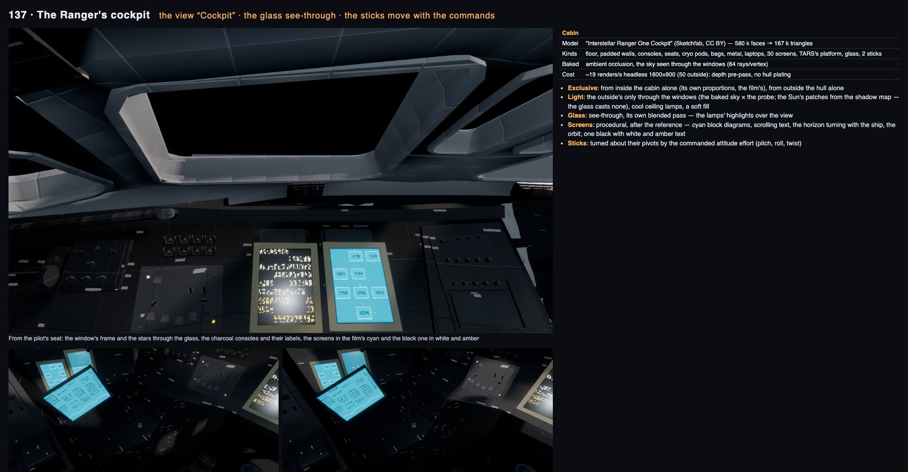
Leçon 1 — Dans le vide, rien ne freine
- Pas d'air, pas de frottement : une rotation lancée continue, une vitesse acquise reste. Le moteur change la vitesse (le Δv, en m/s) dans la direction du nez.
- Le SAS (T) amortit les rotations et tient l'attitude manche lâché. Sans lui, seul un contre-manche arrête une rotation.
- Le RCS translate sans tourner (I/K bas/haut, J/L gauche/droite, H/N avant/arrière) à 8 % de la poussée ; ⇧9 fait des touches d'attitude des touches de translation.
- Les ordres de grandeur (calcul) : Ranger 2 g au plus, Lander 1,5 g, Endurance 0,24 g. Le Δv embarqué (~0,29 c) ne limite pas un vol dans le Système solaire : ce sont la structure (9 g, 6 g, 1,5 g), la chaleur et le temps qui limitent.
Leçon 2 — Lire la sphère d'attitude et le HUD Espace
| Marqueur | Ce que c'est | Touche |
|---|---|---|
| ● prograde | la direction de la vitesse | 1 |
| ⊗ rétrograde | à l'opposé | 2 |
| ◎ radial ext. / int. | s'éloigner du corps / aller vers lui | 3 / 4 |
| ▲ normal / anti-normal | perpendiculaire au plan de l'orbite | 5 / 6 |
| ◇ cible | vers la cible (Tab bref : cible suivante) | 7 |
| nœud | la prochaine poussée planifiée | panneau |
Un maintien pointe le nez sur son marqueur (aligné à moins de 5°). ⌫ lâche tout. R aligne les ailes sur le plan de l'orbite.

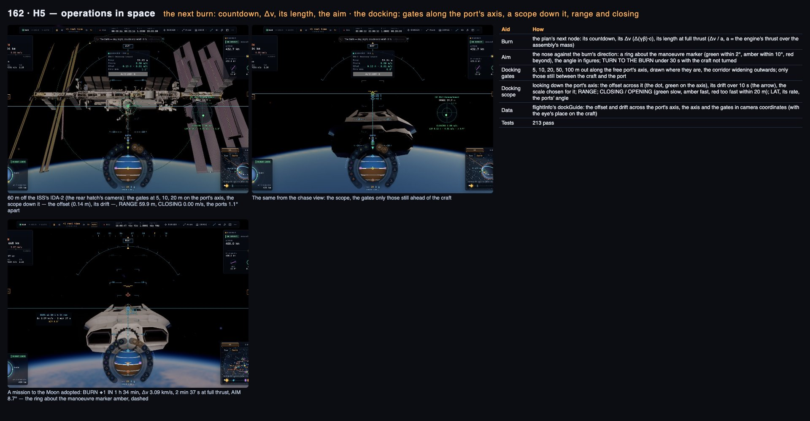
Par __bh
__bh.game.status() // status, soi, altKm (Terre : au-dessus de la mer), speed (/ centre du corps),
// orbit { peKm, apKm, incDeg, ecc, period, tPe, tAp, circular }, target { distKm, rate, caKm, caIn }
__bh.camera.flightInfo() // hold, auto, dirs (les directions des marqueurs), …
__bh.game.pilotState() // "SAS · hold prograde · auto none · throttle 0 % · …"spaceRecoverStart() (0,001 rad/s), puis le rétrograde tenu à 0,0°.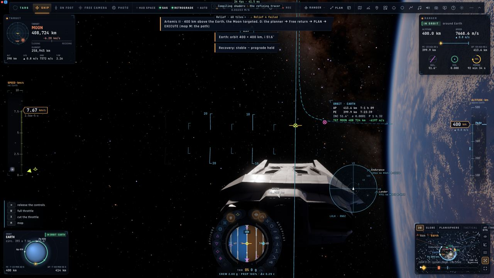
Leçon 3 — Monter et descendre une orbite
Par __bh
__bh.game.orbit("earth", { altKm: 400 }); // hauteurs sur la sphère du rayon équatorial
p.hold = "none"; p.setHold("prograde");
for (let i = 0; i < 30 * 20; i++) __bh.step(1 / 30);
p.throttle = 1;
for (let i = 0; i < 30 * 600 && __bh.game.status().orbit.apKm < 600 - 28; i++) __bh.step(1 / 30);
p.throttle = 0;
for (let i = 0; i < 150 && p.engineNow > 0.01; i++) __bh.step(1 / 30); // la poussée retombe
// réussi : orbit.apKm à ±10 km de 600Leçon 4 — Circulariser et le transfert de Hohmann
9 ou le bouton CIRC : l'autopilote planifie la poussée à la prochaine apside, y vole (le temps accéléré) et ajuste ; il a fini sous 0,2 m/s d'écart (« Circular: A × B km »). Attention : auto devient "node" pendant la poussée.
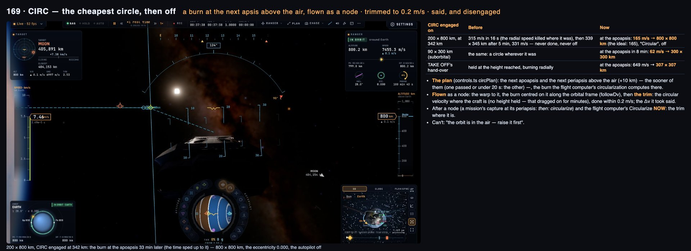

orbit.circular = 587 ± 1 km — alors que Pe/Ap (géodésiques) lisaient 588/608 km : la Terre est aplatie.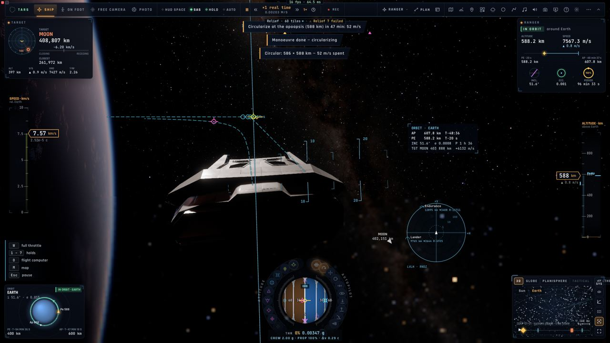
Leçon 5 — Changer de plan
O (l'ordinateur de vol) › onglet ORBIT › Inclinaison : 45° ; PLAN, puis EXÉCUTER — il choisit le nœud le plus éloigné du corps (le moins cher), attend, se tourne, pousse. Par code : c.fcSetPlan(burns, note) (t = le milieu de la poussée) puis c.fcExecute().
plan_maneuver (op inclination, 61,6°) depuis 51,6° : une poussée de 1 336,7 m/s au nœud (2 v sin 5°), inclinaison finale 61,60°.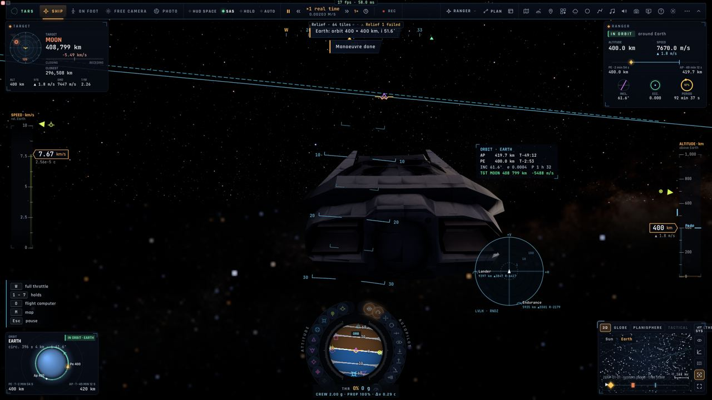
Leçon 6 — Aller vers la Lune, les planètes
On quitte la sphère d'influence de la Terre pour celle de la Lune : une poussée de départ au bon instant, une croisière accélérée, des corrections, une poussée de capture. Mesuré : depuis l'orbite basse, départ 3 089 m/s (2 min 38 s), capture 804 m/s (41 s), 3 893 m/s prévus.
- O : l'onglet MISSION de l'ordinateur de vol : la destination, l'arrivée (orbite, survol, retour libre), la hauteur ; PLAN.
- ⇧O : le plan de mission — chaque poussée, son échéance, son Δv, le budget et la marge ; EXÉCUTER.
- Le temps : , . / (; : ! en AZERTY) ; sous un autopilote, c'est lui qui règle l'accélération.
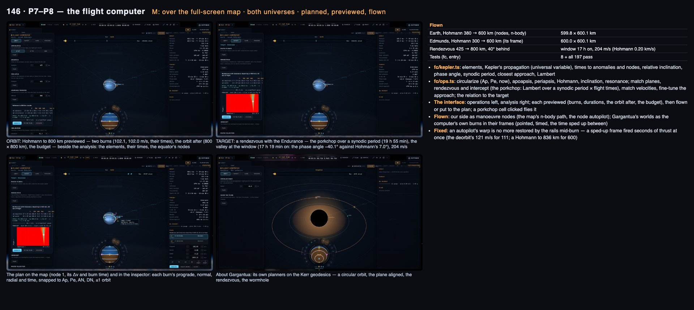
Par __bh
await __bh.camera.missionPlan({ target: "moon", arrival: "orbit", altKm: 100 }); // le plan vient d'un worker
__bh.camera.missionCommit(); __bh.camera.fcExecute();
// avancer par paquets de pas avec une image entre (le worker répond entre les images) ;
// réussi : status().soi === "moon" && status === "orbit". Ne pas changer la date après : le plan serait abandonné.Leçon 7 — Le rendez-vous et l'amarrage
| Capture si, au contact | Sinon |
|---|---|
| écart latéral < 0,3 m · angle des ports < 10° · vitesse relative < 0,5 m/s · rotation relative < 3°/s | rebond (vitesse renvoyée à 0,3×), le message nomme le terme fautif |
- Se placer : l'école « Le rendez-vous » met l'ISS 20 km devant (
__bh.flight.school.space("rendezvous", "try")) ; la scène « Earth: docking to the ISS » place le Ranger à 60 m de son port. - Au-delà de 3 km,
setAuto("dock")refuse :__bh.game.target("iss"); c.rendezvousStart(). Avant le contact :c.dockInfo(lateral,angle,closing,spin, de port à port). - Tab (bref) : la cible. B : à moins de 3 km, l'autopilote d'amarrage ; au-delà, tout le rendez-vous planifié, volé, puis l'amarrage.
- À la main : le COAS (une croix sur l'axe de notre port, le port visé un cercle, vert sous 1°), ⇧9 (RCS en translation), aligner, annuler la dérive, 0,1 m/s.
- ⇧8 : maintien à poste (immobile par rapport à la cible, à moins de 5 km). Amarré, la manette ou le RCS désamarrent.
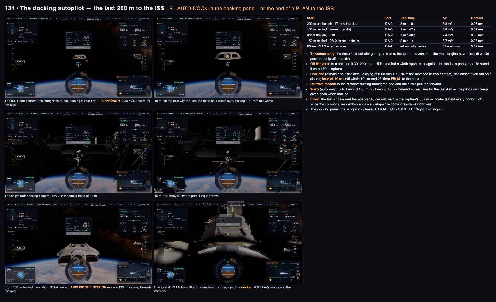

Par __bh
__bh.setDate(Date.UTC(2026, 9, 1, 12)); __bh.game.preset("Earth: docking to the ISS");
const c = __bh.camera; __bh.freeze(true);
c.pilot.auto = "none"; c.pilot.setAuto("dock");
for (let i = 0; i < 30 * 600 && !c.docked; i++) __bh.step(1 / 30);
c.docked; // true ; c.undock() pour repartirsetAuto("dock") depuis la scène d'amarrage : WP2, capture, « Docked to the ISS · IDA-2 · 0.08 m/s ».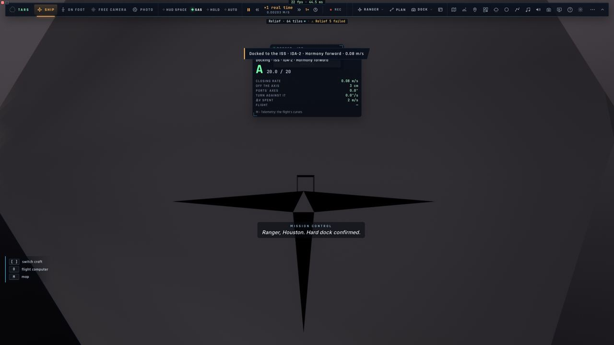
Leçon 8 — Rentrer dans l'atmosphère, se poser en planant (Ranger)
- Abaisser la périapside dans l'air : rétrograde (2), pousser jusqu'à Pe < 60 km (Terre).
- ⇧G : rentrée et atterrissage — désorbitation vers le site (onglet ATTERRIR), rentrée guidée, plané, atterrissage. Z (plein gaz) remet les gaz en approche.
- Sous Mach 2,5, le Ranger est un planeur (finesse ~6) qui se pose comme la navette : pente raide de 12,6° (jusqu'à 19°) à 160 m/s vers un point de visée ≈ 3 km avant le seuil, ressource vers 90 m sur une pente de 1,5° à 130 m/s, arrondi à 12 m, toucher 450 m après le seuil. À la main : ⌫ relâche l'autopilote (ou ⇧F4 pour suivre son directeur) ; le Ranger vole déjà en mode avion ; G train avant 500 m, toucher < 3 m/s. Dans l'air, le temps ne s'accélère pas au-delà de ×4.


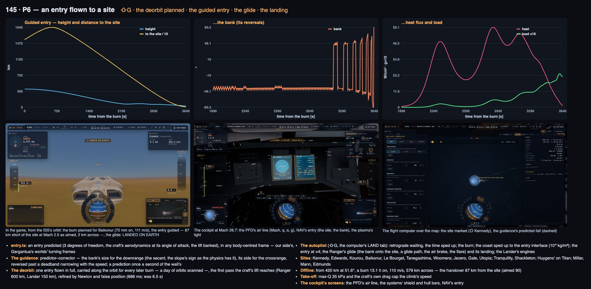
Par __bh
__bh.game.glideTo("Edwards"); // 80 km, 25 km de haut, 750 m/s, l'autopilote de rentrée engagé
// depuis l'orbite : orbit(…), puis p.auto = "none"; p.setAuto("entry") ; attendre c.entryRun.phase !== "plan"
// réussi : c.ourLanded, !c.airFlight.failure, journal "Touchdown … · X m/s down" avec X < 3glideTo("Edwards") : rentrée, plané, toucher à 0,2 m/s.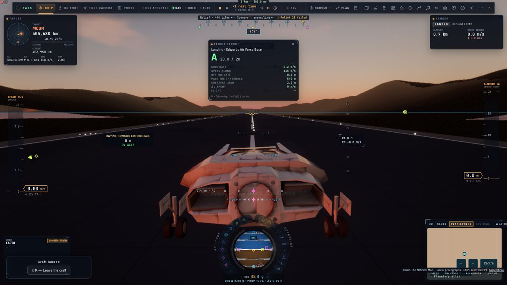
Leçon 9 — Se poser sous moteur sur la Lune (Lander)
8 stationnaire · F7 descente et atterrissage · sous 5 km, W/S avancent ou reculent le point, A/D le décalent (par code : c.lpdOrder = { fwd: 300, right: 0 }, en mètres). Les secondes de stationnaire passent ambre sous 60 s, rouge sous 30 s (« posez-vous ou interrompez »). Verdict au toucher : ≤ 3 m/s posé, ≤ 4,5 dur, au-delà écrasé ; le Lander bascule au-delà d'environ 44° (calcul).
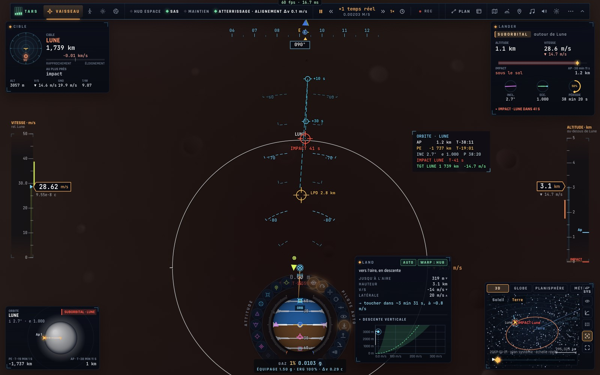

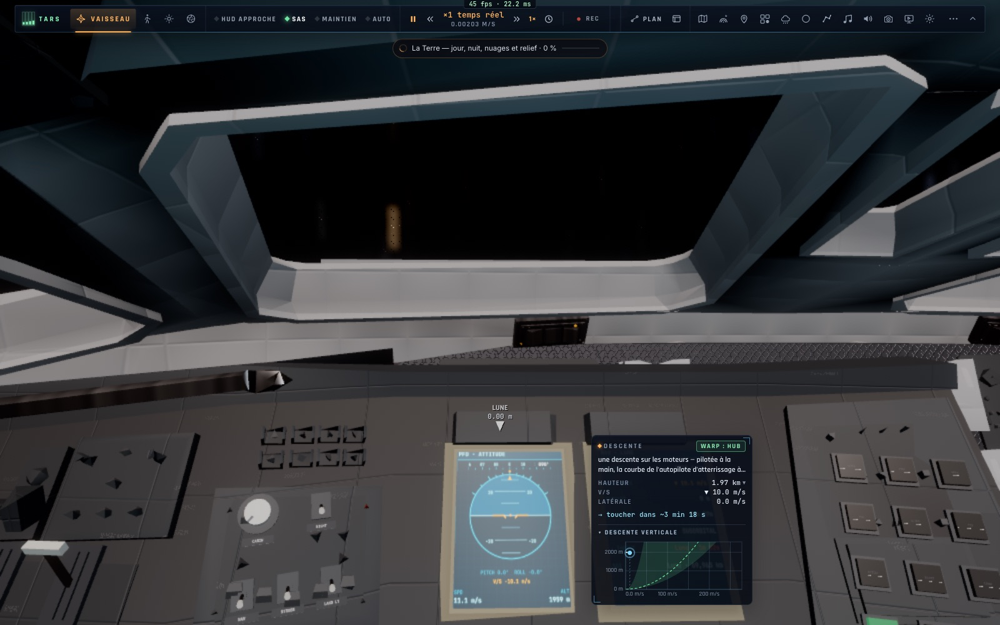
Par __bh
__bh.settings.vessel = "lander"; // attendre __bh.fleet.active === "lander"
__bh.game.hoverOver("moon", 0.674, 23.473, 1.5); // 1,5 km au-dessus de Tranquillité, stationnaire (réservoirs remplis)
const c = __bh.camera; __bh.freeze(true);
c.pilot.auto = "none"; c.pilot.setAuto("land");
for (let i = 0; i < 30 * 300 && !c.ourLanded && !c.airFlight.failure; i++) __bh.step(1 / 30);setAuto("land"), lpdOrder = { fwd: 300 } : toucher à 0,8 m/s, à 300,2 m du site.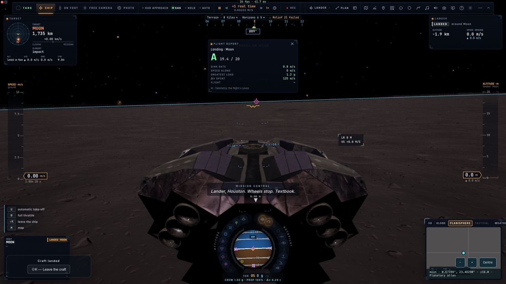
Leçon 10 — Décoller vers l'orbite
U : sans objectif, la montée vise 3 % du rayon (≈ 52 km sur la Lune) ; l'onglet LAUNCH de l'ordinateur de vol propose 200 km ; par code c.launchGoal = { altKm: 100, incDeg: null } avant setAuto("takeoff") (il reste d'un vol à l'autre). Puis la bascule et la circularisation (takeoff devient circularize, puis souvent node). Sur une piste avec de l'air, le Ranger roule, se cabre à 110 m/s et monte.

launchGoal = 100 km, U : orbite 100,0 ± 0,04 km. Le Lander posé, lui, ne décolle pas (défaut constaté).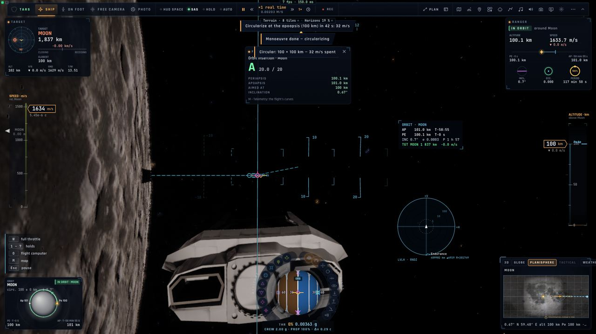
Leçon 11 — L'Endurance, l'anneau, Gargantua
- L'Endurance (900 t, 0,24 g, 1,5 g de limite) ne se pose pas, ne rentre pas. ⇧[ ⇧] changent la rotation de l'anneau (1 g ≈ 5,5 tr/min). B s'amarre à elle même en vrille.
- Près de Gargantua, le temps du vaisseau ralentit (dτ/dt au HUD, l'horloge de la Terre qui prend de l'avance) ; près de Miller, une heure à bord vaut sept ans sur Terre. 0 approche, ⇧0 orbiter la cible.
- Le trou de ver : dans la gorge, aucun autopilote ne vole.
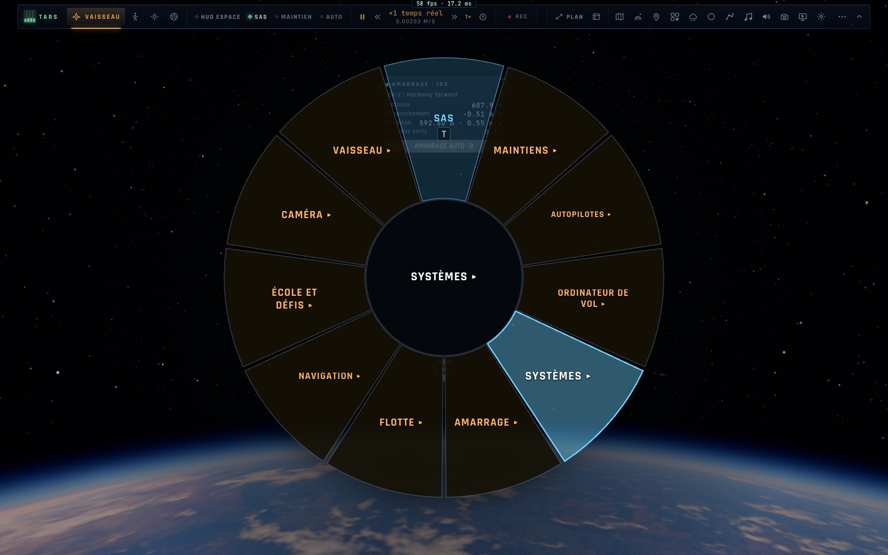

Leçon 12 — Les pannes
Réglages › Jeu › Engins spatiaux › Pannes (aucune par défaut). Une panne allume l'alarme principale (Entrée l'acquitte) et sa checklist (page CKL, ou M › Systèmes) : moteur éteint (relance : une chance sur trois de rester à 50 %), propulseur RCS bloqué (isoler le quad), gyroscope, court-circuit, fuite d'O₂, épurateur ; batterie à plat : plus de RCS.
Leçon 13 — S'entraîner avec l'école spatiale
Tab maintenu › École et défis › École de vol : quinze leçons — l'attitude et le RCS · les maintiens · monter et descendre · circulariser et Hohmann · le changement de plan · le rendez-vous · l'amarrage à la main · la désorbitation · le plané · la descente lunaire · le décollage · l'amarrage à l'Endurance en vrille · l'assistance gravitationnelle · Gargantua · les urgences. Guidé, Démonstration, Essai ; une note sur 20.
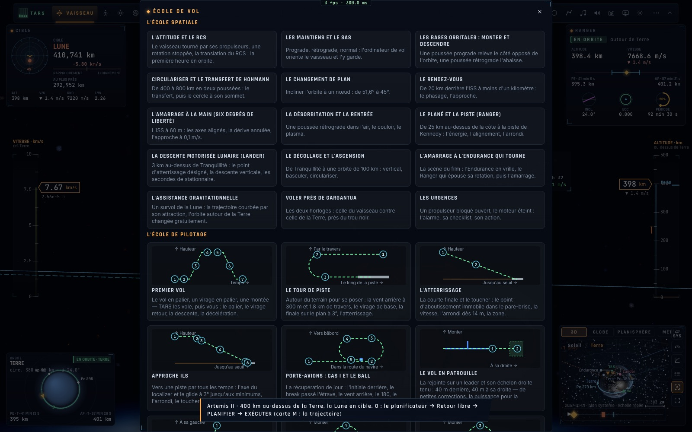
Progression conseillée : leçon 1 en Réaliste (sans SAS), puis Assisté pour les leçons 2 à 6 · l'école 1 à 4 en Essai · le rendez-vous et l'amarrage (B d'abord, puis à la main) · la rentrée (⇧G, puis assistée) · la Lune avec le Lander · Réaliste · l'Endurance et Gargantua.
Par __bh
__bh.flight.school.space("hohmann", "try"); // ids : attitude, holds, orbit-basics, hohmann, plane, rendezvous, docking,
// entry, glide, lunar-descent, ascent, endurance-dock, slingshot, relativity, emergencies
__bh.camera.spaceCourse; // l'étape, son temps, ses résultats (school.state() est l'école des avions)Aide-mémoire — les autopilotes et leurs enchaînements
status().status, docked, ourLanded), pas pilot.auto. Un toucher termine tous les autopilotes sauf le décollage.Aide-mémoire — le clavier
| Touche | Quoi |
|---|---|
| W S · A D · Q E (Z S · Q D · A E) | tangage (W pique) · lacet · roulis |
| ⇧ · Alt (↑ ↓) · Z X (W X) | manette + / − · plein gaz / coupé |
| I K · J L · H N | RCS : bas/haut · gauche/droite · avant/arrière |
| T · R · Verr. Maj | SAS · alignement du roulis · commandes fines |
| 1…7 | maintiens : prograde, rétrograde, radial ±, normal ±, cible |
| 8 9 0 · ⇧0 | stationnaire, circulariser, approche · orbiter la cible |
| B · F7 · U · ⇧G | rendez-vous et amarrage · atterrir · décoller · rentrée et atterrissage |
| ⇧8 · ⇧9 · ⇧F4 · ⇧X | maintien à poste · RCS en translation · autopilote assisté · récupérer |
| O · ⇧O · M | ordinateur de vol (MISSION) · plan de mission · carte |
| G · F · P | train · mode de vol dans l'air · volets |
| Tab · Entrée · ⌫ · [ ] | cible suivante (bref), roue (maintenu) · acquitter · tout relâcher · vaisseau |
Aide-mémoire — les chiffres
| Ranger | Lander | Endurance | |
|---|---|---|---|
| Masse | 40 t | 160 t | 900 t |
| Accélération max (calcul, Crew 2 g) | 2 g | 1,5 g | 0,24 g |
| Limite structurale | 9 g | 6 g | 1,5 g |
| Bouclier · coque | 1 950 K · 1 150 K | 2 300 K · 1 000 K | aucun · 700 K |
| Train | tricycle | quatre pieds | aucun |
| Toucher | ≤ 3 m/s posé · ≤ 4,5 dur · au-delà écrasé (réglage crashSpeed) | ||
| Amarrage | latéral < 0,3 m · angle < 10° · vitesse < 0,5 m/s · rotation < 3°/s | ||
| Accélération du temps dans l'air | ×4 au plus | ||
Le détail, et les tests : E2E-VOLS.md · la référence : VOL-VAISSEAUX.md · le manuel : VAISSEAUX.fr.md.